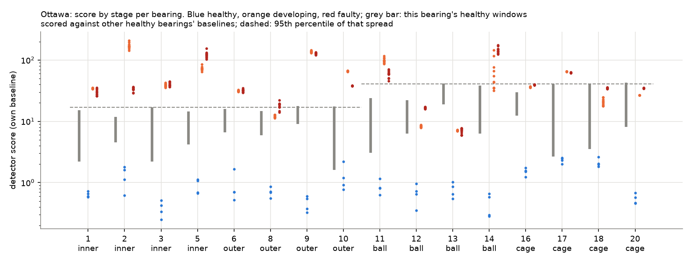
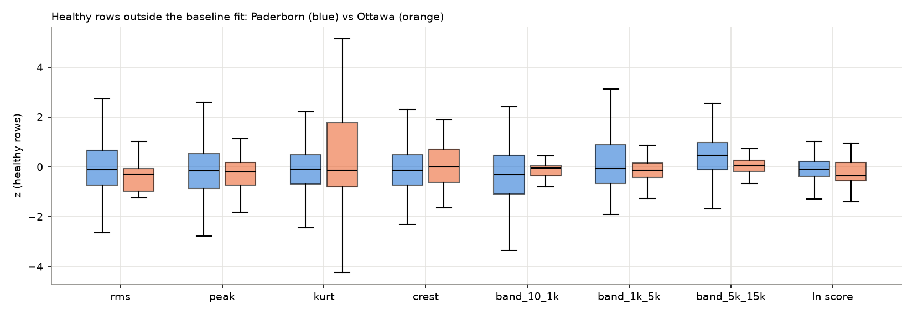
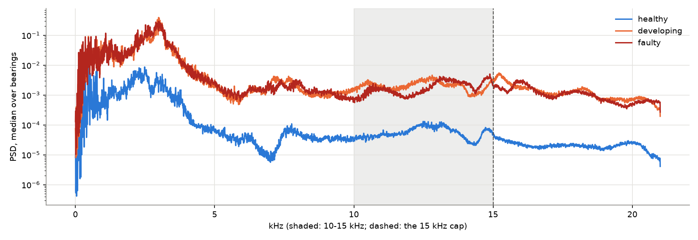

{
"pass": false,
"stage1_above_yardstick": 10,
"stage2_above_stage1": 9,
"bearings": 16,
"needed": 12
}
{
"pass": false,
"features": {
"rms": {
"paderborn_5_95": [
-1.7718599253001828,
1.5696157505024586
],
"ottawa_median": -0.29502942969946155,
"inside": true
},
"peak": {
"paderborn_5_95": [
-1.938822585822048,
1.6543026328807633
],
"ottawa_median": -0.21110201727505595,
"inside": true
},
"kurt": {
"paderborn_5_95": [
-1.3949345228976604,
1.555983471062849
],
"ottawa_median": -0.1398230999999861,
"inside": true
},
"crest": {
"paderborn_5_95": [
-1.410385368624945,
1.7549614321236802
],
"ottawa_median": 0.0030592566411170924,
"inside": true
},
"band_10_1k": {
"paderborn_5_95": [
-2.1953379888953837,
1.3962956521921304
],
"ottawa_median": -0.04484111455091748,
"inside": true
},
"band_1k_5k": {
"paderborn_5_95": [
-1.212271166312514,
2.0909542426009615
],
"ottawa_median": -0.14296562262444826,
"inside": true
},
"band_5k_15k": {
"paderborn_5_95": [
-1.0818301710083282,
2.9809273721433036
],
"ottawa_median": 0.061737029132276154,
"inside": true
},
"ln score": {
"paderborn_5_95": [
-0.767070638072338,
0.6557066717551768
],
"ottawa_median": -0.3462542115769942,
"inside": true
}
},
"probe_auc": {
"logistic": 0.7758035714285715,
"mlp": 0.8676339285714286
},
"probe_auc_without_rpm": {
"logistic": 0.7141517857142857,
"mlp": 0.8569642857142857
},
"rows": {
"paderborn": 350,
"ottawa": 64
}
}
{
"pass": false,
"level_10_15k_over_15_21k_healthy": 2.280148149255108,
"power_10_15k_vs_healthy": {
"developing": 21.83860007619097,
"faulty": 37.254298636208134
},
"rule": "healthy 10-15 kHz level at least 4x (6 dB) the 15-21 kHz level, and faulty at least 2x (3 dB) healthy"
}